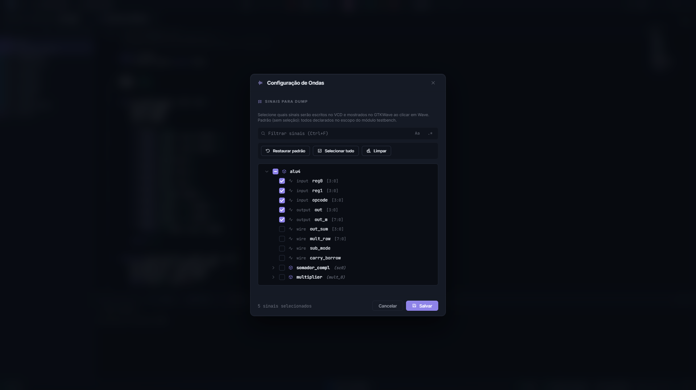

Formas de onda: GTKWave e Surfer¶
Depois que a simulação gera o arquivo de ondas, a AURORA abre um visualizador para inspecionar cada sinal do circuito ciclo a ciclo. Esta página explica o que a IDE prepara para você, como escolher os sinais gravados e como usar cada um dos dois visualizadores.
O que a AURORA prepara¶
Abrir um despejo bruto em um visualizador qualquer significa começar do zero: nenhum sinal selecionado, tudo em binário, nomes hierárquicos crus. A AURORA elimina esse trabalho gerando, a cada simulação, um layout curado.
Cada processador do projeto vira uma seção própria, com divisores nomeados e, no Surfer, um grupo colapsável.
A ordem é pensada para leitura: clock, reset e interrupção primeiro; depois as portas de entrada e saída em amarelo, as instruções em violeta, as variáveis em laranja e as flags ao final.
Variáveis do tipo comp são decodificadas para a forma legível \(a+bi\) pelo conversor comp2gtkw do YANC, em vez de aparecerem como dois sinais binários separados.
O destaque, porém, são as trilhas de texto que mostram, a cada ciclo de clock, o mnemônico assembly executado e a linha C± correspondente, avançando em sincronia com o circuito. É o seu programa rodando dentro do hardware, visível linha a linha.
Essas trilhas vêm dos arquivos de tradução gerados na compilação. No GTKWave, a curadoria chega como um arquivo .gtkw; no Surfer, como um arquivo de estado .surf.ron. Nos dois casos, o visualizador já abre pronto para leitura.
Importante
Essa sincronia entre onda, assembly e código-fonte só é possível porque no fluxo C± cada variável ocupa um endereço fixo da memória de dados. É a contrapartida direta da ausência de recursão, explicada em O processador SAPHO por dentro.
Gerar uma forma de onda¶
Defina o testbench pelo menu de contexto da árvore.
Escolha o simulador na barra superior: Icarus para depurar, Verilator para simulações longas.
Escolha o visualizador, GTKWave ou Surfer.
Abra Configuração de ondas e selecione os sinais desejados.
Clique em Analisar Verilog (forma de onda).
A AURORA executa a simulação e abre o resultado. Acompanhe o progresso no terminal TWAVE; se a compilação ou o testbench falhar, o visualizador pode não abrir, e é esse terminal que explica por quê.
Aviso
Com o Verilator selecionado, apenas os sinais do topo do testbench são expostos. Os sinais internos do processador, incluindo as variáveis pelo nome, exigem o Icarus. Se os sinais internos sumiram, é quase sempre esse o motivo.
Escolher os sinais gravados¶
{kind=link}

Figura 26 O modal lista todos os sinais descobertos no projeto, com busca por texto ou expressão regular, seleção em massa e um contador no rodapé.¶
Por padrão, o despejo grava os sinais do escopo do testbench. O botão Configuração de ondas abre o modal que permite pesquisar por nome, navegar pela hierarquia, selecionar tudo ou nada, restaurar o padrão e filtrar apenas os sinais do processador.
Atalho |
Ação |
|---|---|
Ctrl+F |
Focar a pesquisa |
Esc |
Limpar a pesquisa; pressione de novo para fechar |
Selecione primeiro clock, reset, entradas, saídas e os poucos sinais internos necessários para responder à pergunta do teste. Menos sinais significam arquivos menores e simulação mais leve, o que pesa muito em execuções longas.
A ordem de precedência do despejo¶
Na hora de gravar, a AURORA decide a lista de sinais por uma ordem definida. Conhecê-la evita surpresas:
um
.gtkwativo no seletor da barra superior, cujos sinais referenciados mandam;a sua seleção no modal de configuração;
um
$dumpvarsescrito à mão no testbench, que é respeitado sem qualquer injeção;o padrão, que é todo o escopo do testbench.
Nota
O seu testbench nunca é modificado. A instrumentação acontece em uma cópia temporária, de modo que um $dumpfile ou $dumpvars manual permanece intacto no arquivo original.
O seletor de layout¶
Ao lado do botão de ondas, o seletor escolhe o layout ativo. A opção padrão usa o layout curado gerado pela AURORA, e + Adicionar arquivo .gtkw… registra um layout seu, salvo de dentro do GTKWave.
O seletor acompanha o visualizador ativo: em GTKWave trabalha com .gtkw; em Surfer, com .surf.ron e .sucl.
O arquivo de ondas em si continua sendo o .vcd ou o .fst. Os layouts apenas organizam quais sinais mostrar, em que ordem e com que cores.
Aviso
Use apenas layouts criados para o mesmo testbench e para uma hierarquia compatível. Um layout não contém a simulação, e um layout de outro projeto pode apontar para sinais inexistentes mesmo com o arquivo de ondas gerado corretamente.
GTKWave¶
O GTKWave empacotado não é o original puro: é o fork do laboratório, com tema escuro por padrão, ajuste automático de zoom ao abrir, rótulos justificados à esquerda, ícones modernizados e zoom animado.
No uso cotidiano:
os sinais são adicionados a partir da árvore de escopos à esquerda;
o cursor primário se posiciona com o clique e o secundário com o botão do meio, com a barra exibindo a diferença de tempo entre eles;
o formato de exibição de cada sinal muda pelo menu de contexto, em ;
o zoom responde aos botões de lupa e a Ctrl com a roda do mouse;
a seleção atual de sinais, cores e ordem pode ser salva em um
.gtkwpróprio por ;após uma nova simulação, recarrega o arquivo.
Dica
Se você salvar o seu próprio .gtkw no projeto e o marcar como ativo no seletor, ele passa a ter precedência sobre o layout automático, e a simulação seguinte grava exatamente os sinais que ele referencia.
Surfer¶
O Surfer é um visualizador moderno escrito em Rust, com interface acelerada por GPU e carregamento preguiçoso dos arquivos, confortável em simulações grandes. A AURORA usa o fork surfer-aurora, com decodificadores específicos do SAPHO, e baixa o binário automaticamente com verificação de integridade.
Recursos que valem conhecer:
formatos de exibição ricos, de binário e hexadecimal a ponto fixo e ponto flutuante IEEE em vários tamanhos;
grupos colapsáveis, um por processador no layout da AURORA, essenciais em projetos multiprocessados;
as trilhas de assembly e C± instaladas automaticamente como tradutores de mapeamento;
cursores e navegação rápidos, com uma linha de comando interna de autocompletar difuso;
desenho analógico de sinais, útil para ver amostras processadas como curvas.
Os complexos do SAPHO também funcionam: a AURORA pré-decodifica os sinais comp e instala o resultado como tradutor, de modo que a faixa já abre na forma \(a+bi\).
Nota
Uma limitação conhecida no Windows O recarregamento automático do arquivo de ondas não dispara na versão empacotada. Por isso a AURORA fecha e reabre a janela do Surfer a cada nova simulação. No modal de configuração há uma opção de manter as janelas abertas, para comparar execuções lado a lado.
Se o Surfer estiver selecionado mas o executável não estiver presente, a AURORA recua para o GTKWave sem erro, de propósito.
Se o visualizador abrir sem sinais¶
Verifique nesta ordem:
o testbench executou até o fim;
o terminal TWAVE não informou erro;
existe despejo de sinais;
os sinais selecionados ainda existem no RTL atual;
o layout ativo pertence ao testbench atual.
Volte ao layout padrão e gere de novo para descartar um layout incompatível.
Se os sinais aparecerem mas permanecerem sem mudança, verifique o clock, o reset, os estímulos e o intervalo de tempo mostrado. O problema pode estar no testbench ou apenas no zoom da janela, e não na geração do arquivo.
Se o arquivo de ondas não for encontrado¶
confira o nome usado em
$dumpfile, se o testbench for seu;verifique se o testbench encerrou antes de produzir o arquivo;
remova arquivos de onda antigos que possam causar ambiguidade;
execute novamente e leia o terminal TWAVE.
Leitura relacionada¶
Simular com Icarus, Verilator ou cocotb cobre os motores e os tipos de testbench.
O conjunto de instruções ajuda a ler a trilha de assembly.
Criar e configurar processadores mostra onde aumentar o número de ciclos quando a onda termina cedo.